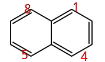

化学信息学简介
1 化学信息学定义
化学信息学(cheminformatics)，是计算机学科和化学的结合学科，其主要研究对化学物质的信息进行存储和检索这一过程。
化学信息学主要解决如下四个问题：
- 如何存储分子
- 如何精确找到这个分子
- 分子结构中子结构的查找
- 各分子的相似性搜索
2 MDL
3D坐标表示法，各个原子，具体的x，y，z坐标信息都列入其中了。
3 线性标记法
4 WLN
Wiswesser Line Notation，魏氏线性标记法。由William J. Wisswesser于十九世纪50年代早期发明。
5 SMILES
Simplified molecular input line entry specification，简化分子线性输入规范。这应该是目前应用最广最为大家熟知的线性标记法了。下面详细介绍一下这个线性标记法的规则，更多细节请参看 这个网页 。
- 原子：[Na] [Cl] ，然后原子的同位素表示如下[2H]，[13C]。
- 离子：[Na+] [Cl-] [Cu+2] 或者 [Cu++]也是可以的。
- 离子化合物： 点符号 “.” 表示两个原子之间不成键，比如氯化钠
[Na+].[Cl-]。 - 单质：氢气
[H][H], 氧气[O]=[O]，氮气[N]#[N]，这里各个原子外面默认用单键连接，然后 = 表示双键， # 表示三键。 - 上面的氧气和氮气可以简写为 O=O 和 N#N ，但是氢气不行。因为氢原子比较特殊，其是会自动加上的，这是符合我们日常有机化学各个结构式的表达风格，比如双氧水 表达为
OO即可。关于如何加氢的规则我觉得就不用多说了，学过有机化学的应该是清楚的。这里值得一提的就是方括号里面是不自动加氢的，于是有[H]就是一个氢原子，而[OH2]就是两个氢原子，这是水分子。 - 有机化合物：接着上面的讨论，一些基本的有机化合物表达式大家应该能猜出了，比如：CCCC 就是丁烷， CCO 就是乙醇。分支的处理：一是整个有机化合物顺序链根据有机化学中学习的IUPAC命名法来；二是圆括号表示分支子基团() 。比如异丁烷表示为
CC(C)C，新戊烷表示为CC(C)(C)C，醋酸表示为CC(=O)O，比如那个双键。 - 环的表示： 比如环己烷
C1CCCCC1,其核心理念就是后面相同编号的原子连键。比如化合物萘：

其SMILES表达就是：
c1ccc2ccccc2c1
这其中涉及到萘的具体IUPAC编号问题，按照顺时针从右上那个1开始，然后到4之后跳到5，再678，然后中间那两个碳必须跳一下，这个知识就比较冷门了。这里数字1或2可以互换，是任意的。
这个例子还涉及到一个知识点，那就是有芳香性的原子（也就是苯环上的C，或者其他杂环原子ONS等等）都要小写。这样苯你应该知道怎么写了： c1ccccc1 。
- 立体化学 在双键的两端
/C=C/或者\C=C\表示反(trans)双键， 然后/C=C\或者\C=C/表示顺(cis)。
手性我还不是很熟悉，暂时略过。
6 InChI
7 SMARTS
8 name
8.1 IUPAC name
这个学习有机化学的应该都清楚什么是IUPAC命名法了。
8.2 Trade name
商用名
8.3 Common name
常用名，比如醋酸等，也叫俗名吧。
9 子结构搜索
9.1 预先建立索引
10 参考资料
- An introduction to the computer science and chemistry of chemical information systems ， 2009 by Craig A. James
- 维基百科SMILES
- open smiles 官方文档